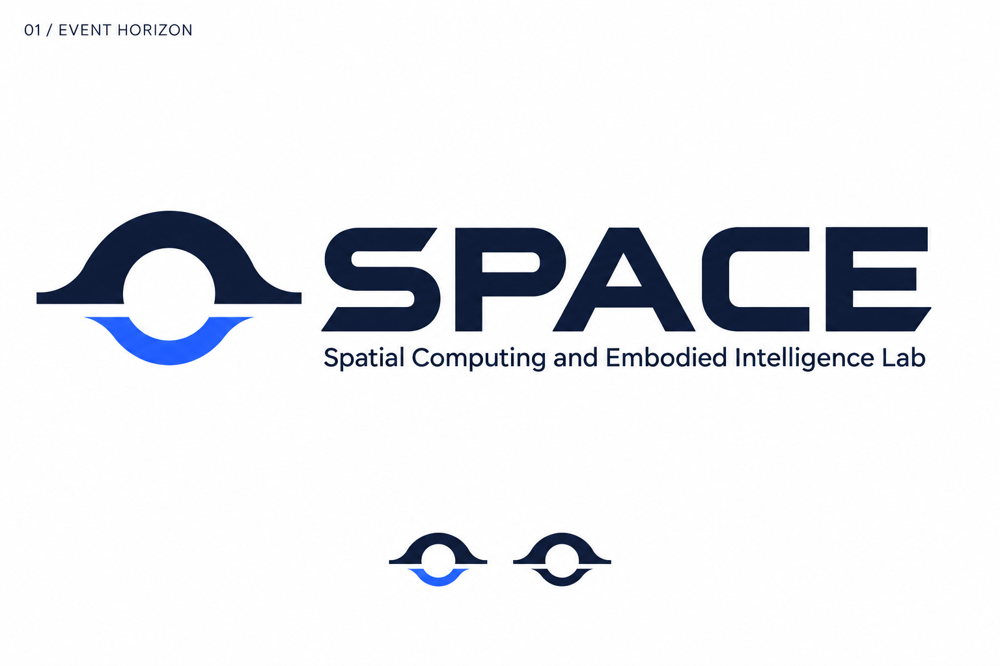
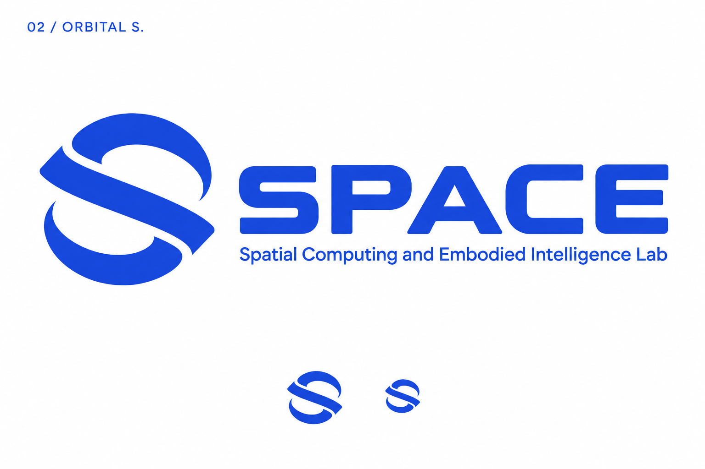
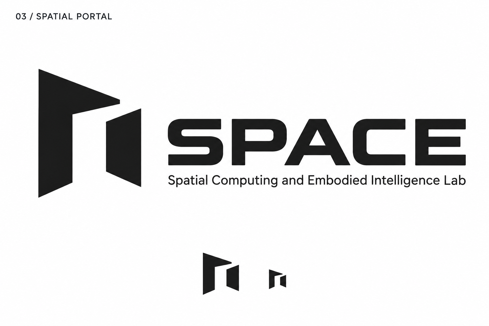
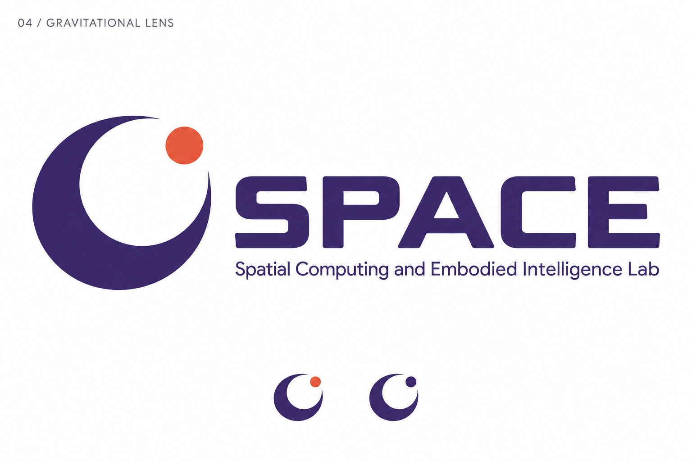
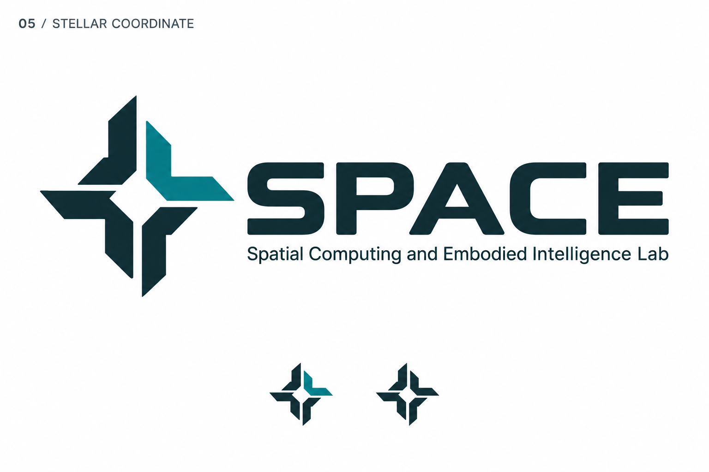
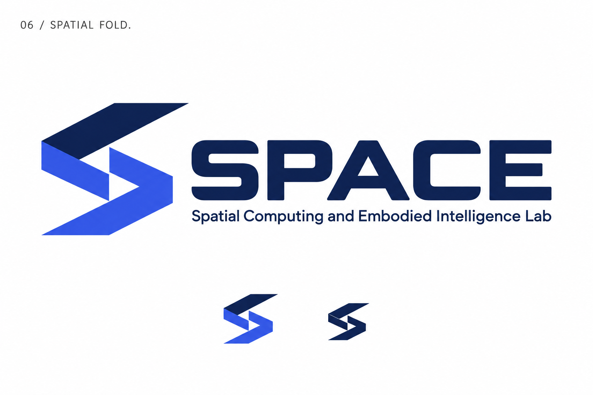

01 / EVENT HORIZON

六条独立的标志方向，聚焦左侧图形。每案以 1–2 个主色、明确轮廓与留白，探索宇宙、空间计算和字母 S 之间的关系。






希望名称与宇宙意象结合得更直接，优先深化 02「轨道 S」；希望更具学术气质、突出空间计算，优先深化 03「空间之门」。06「空间折叠」适合更锐利、强调技术与动势的方向。
这些是用于比较方向的概念图。图中小标展示缩小与单色思路；定稿时仍需统一曲线、间距与字标，并制作准确的矢量母版。